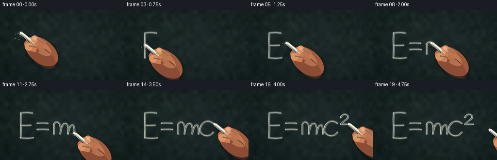
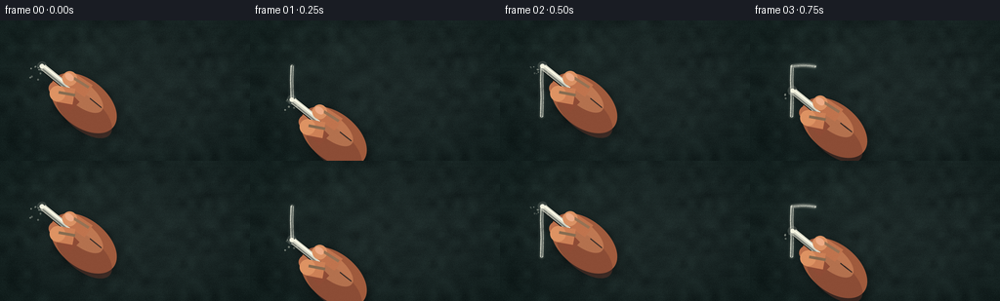
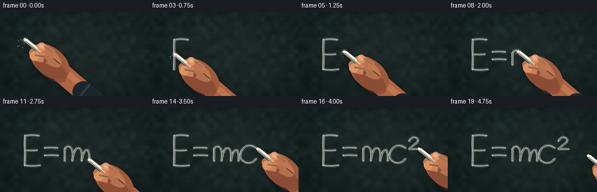

CODING AGENTS AS PIXEL WORLD MODELS
traex/GPT-5.6-Sol · phygen_031
点击播放 · 原生 RGB 像素
逐轮保存的候选
回放视频、检查图与代码变化。
每份候选均可单独播放。实际图片检查记录在下方工具轨迹中。
候选 01播放与检查图
点击播放 · 原生 RGB 像素

展开代码变化
--- 上一保存版本
+++ 本次保存版本
@@ -0,0 +1,255 @@
+from pathlib import Path
+import json, math
+import numpy as np
+import cv2
+from PIL import Image, ImageDraw, ImageFilter
+import artifact_io
+
+ROOT = Path(__file__).resolve().parent
+spec = json.loads((ROOT / 'task_spec.json').read_text())
+W, H, N = spec['width'], spec['height'], spec['frames']
+S = 4
+WW, HH = W*S, H*S
+rng = np.random.default_rng(31031)
+
+# ---------- Blackboard surface: slate color, rubbed grain, scratches, vignette ----------
+yy, xx = np.mgrid[0:H, 0:W]
+base = np.zeros((H,W,3), np.float32)
+base[:] = (22, 34, 33)
+base += ((xx/W)*2.0 - (yy/H)*1.5)[...,None]
+# layered mineral grain and broad, horizontal eraser haze
+small = rng.normal(0,1,(18,32)).astype(np.float32)
+medium = cv2.resize(small,(W,H),interpolation=cv2.INTER_CUBIC)
+fine = rng.normal(0,1,(H,W)).astype(np.float32)
+streak_seed = rng.normal(0,1,(H,36)).astype(np.float32)
+streak = cv2.resize(streak_seed,(W,H),interpolation=cv2.INTER_CUBIC)
+streak = cv2.GaussianBlur(streak,(0,0),sigmaX=13,sigmaY=.8)
+texture = 2.7*medium + 1.25*fine + 2.0*streak
+base += texture[...,None] * np.array([.73,1.0,.92],np.float32)
+# subtle central light and strong edge falloff
+cx, cy = 136, 72
+rad = np.sqrt(((xx-cx)/150)**2 + ((yy-cy)/95)**2)
+light = 7.2*np.clip(1-rad,0,1) - 9.0*np.clip(rad-.60,0,.65)
+base += light[...,None]
+# tiny warm reflection at upper left
+base += (2.5*np.exp(-((xx-49)**2/(2*55**2)+(yy-25)**2/(2*35**2))))[...,None]*np.array([.7,1,.8])
+base = np.clip(base,0,255).astype(np.uint8)
+base_hi = np.asarray(Image.fromarray(base).resize((WW,HH), Image.Resampling.BICUBIC))
+
+# Render old, wiped chalk memories onto a reusable background.
+bg = Image.fromarray(base_hi).convert('RGB')
+old = Image.new('RGBA',(WW,HH),(0,0,0,0)); od = ImageDraw.Draw(old)
+def ln(points, fill, width):
+ od.line([(int(x*S),int(y*S)) for x,y in points], fill=fill, width=max(1,int(width*S)))
+# almost-erased formulas and diagrams, kept away from the hero equation
+ln([(7,28),(25,25),(31,30)], (177,188,175,15), .7)
+ln([(10,34),(28,34)], (190,197,187,13), .6)
+ln([(216,19),(246,19)], (198,203,191,15), .6)
+ln([(226,13),(226,32)], (198,203,191,13), .6)
+ln([(12,121),(32,118),(29,132)], (198,204,193,12), .7)
+ln([(211,119),(245,116)], (200,203,194,12), .6)
+ln([(219,125),(243,126)], (200,203,194,9), .5)
+# rubbed horizontal residue
+for _ in range(34):
+ x0=float(rng.uniform(0,220)); y0=float(rng.uniform(6,139)); length=float(rng.uniform(10,55))
+ od.line((x0*S,y0*S,min(255,x0+length)*S,(y0+rng.normal(0,.5))*S),
+ fill=(192,198,190,int(rng.integers(2,9))), width=int(rng.integers(1,4)))
+old = old.filter(ImageFilter.GaussianBlur(0.45*S))
+bg = Image.alpha_composite(bg.convert('RGBA'),old).convert('RGB')
+bg_arr = np.array(bg)
+
+# ---------- New equation paths: E = mc² ----------
+def bezier(p0,p1,p2,count=20):
+ t=np.linspace(0,1,count)[:,None]
+ return (1-t)**2*np.array(p0)+(2*(1-t)*t)*np.array(p1)+t*t*np.array(p2)
+def poly(*p): return np.array(p,np.float32)
+# Natural stroke order; every element is a distinct contact with the board.
+strokes = [
+ poly((43,47),(42.5,61),(43,79),(42.5,98)),
+ bezier((43,47),(54,45),(66,47),14),
+ bezier((43,72),(53,73),(63,72),12),
+ bezier((43,98),(55,100),(68,98),14),
+ bezier((77,68),(87,67),(98,68),12),
+ bezier((77,81),(88,80),(99,81),12),
+ # lower-case m, in one energetic continuous stroke
+ np.vstack([
+ poly((111,90),(111,70)),
+ bezier((111,70),(117,61),(123,70),9), bezier((123,70),(126,78),(124,90),9),
+ bezier((124,90),(127,65),(137,69),13), bezier((137,69),(142,74),(140,90),10),
+ bezier((140,90),(143,70),(151,72),11), bezier((151,72),(154,79),(153,90),10)
+ ]),
+ # open c
+ np.vstack([bezier((183,68),(169,58),(159,72),14), bezier((159,72),(151,86),(165,93),16), bezier((165,93),(176,96),(183,87),10)]),
+ # superscript two
+ np.vstack([bezier((190,56),(196,46),(204,52),12), bezier((204,52),(207,57),(199,62),10), poly((199,62),(190,70),(207,70))])
+]
+
+# Arc-length utilities and weighted animation timeline.
+def path_length(p): return float(np.linalg.norm(np.diff(p,axis=0),axis=1).sum())
+lengths=[path_length(p) for p in strokes]
+segments=[]
+for i,p in enumerate(strokes):
+ # Writing time proportional to distance, with minimum time for crisp small strokes.
+ segments.append(('draw',i,max(10.0,lengths[i])))
+ if i<len(strokes)-1:
+ jump=float(np.linalg.norm(strokes[i+1][0]-p[-1]))
+ segments.append(('move',i,min(10.0,max(4.5,jump*.25))))
+total=sum(v for _,_,v in segments)
+
+def partial_path(p,f):
+ if f<=0: return p[:1].copy()
+ if f>=1: return p.copy()
+ d=np.linalg.norm(np.diff(p,axis=0),axis=1); target=d.sum()*f
+ out=[p[0]]; acc=0.0
+ for j,dd in enumerate(d):
+ if acc+dd<=target: out.append(p[j+1]); acc+=dd
+ else:
+ q=(target-acc)/(dd+1e-9); out.append(p[j]*(1-q)+p[j+1]*q); break
+ return np.array(out,np.float32)
+
+def animation_state(progress):
+ q=progress*total; completed=[]
+ for kind,i,dur in segments:
+ if q>=dur:
+ if kind=='draw' and i not in completed: completed.append(i)
+ q-=dur; continue
+ f=max(0,min(1,q/dur))
+ f=f*f*(3-2*f)
+ if kind=='draw':
+ pp=partial_path(strokes[i],f)
+ return completed,i,pp,pp[-1],True
+ a=strokes[i][-1]; b=strokes[i+1][0]
+ # lifted chalk follows a small outward arc between strokes
+ tip=a*(1-f)+b*f + np.array([0,-4*math.sin(math.pi*f)],np.float32)
+ return completed,None,None,tip,False
+ return list(range(len(strokes))),None,None,strokes[-1][-1],False
+
+# Fixed spatial chalk noise so finished marks don't shimmer.
+chalk_noise = rng.random((HH,WW)).astype(np.float32)
+chalk_grain = cv2.GaussianBlur(rng.random((HH,WW)).astype(np.float32),(0,0),.65*S)
+
+def chalk_layer(completed, active_idx, active_path):
+ core=np.zeros((HH,WW),np.uint8)
+ edge=np.zeros_like(core)
+ def paint_path(p, strength=255):
+ pts=np.round(p*S).astype(np.int32)
+ if len(pts)==1:
+ cv2.circle(core,tuple(pts[0]),2*S,strength,-1,cv2.LINE_AA)
+ else:
+ cv2.polylines(edge,[pts],False,150,6*S,cv2.LINE_AA)
+ cv2.polylines(core,[pts],False,strength,3*S,cv2.LINE_AA)
+ # two hairline mineral tracks along the broad chalk edge
+ cv2.polylines(core,[pts+np.array([0,S])],False,115,1*S,cv2.LINE_AA)
+ cv2.polylines(core,[pts+np.array([S//2,-S])],False,92,1*S,cv2.LINE_AA)
+ for i in completed: paint_path(strokes[i])
+ if active_idx is not None: paint_path(active_path)
+ # static voids, granular deposits, and softly rubbed edge
+ m=core.astype(np.float32)/255
+ m *= np.where(chalk_noise>.075, .72+.28*chalk_grain, .12)
+ m += (edge.astype(np.float32)/255)*(.10+.07*chalk_grain)
+ m=np.clip(m,0,1)
+ a=(m*246).astype(np.uint8)
+ rgba=np.empty((HH,WW,4),np.uint8)
+ rgba[...,:3]=np.array([238,239,223],np.uint8); rgba[...,3]=a
+ return Image.fromarray(rgba,'RGBA')
+
+# ---------- Hand + chalk, drawn large and downsampled ----------
+def ellipse_mask(center, axes, angle):
+ m=np.zeros((HH,WW),np.uint8)
+ cv2.ellipse(m,(int(center[0]*S),int(center[1]*S)),(int(axes[0]*S),int(axes[1]*S)),angle,0,360,255,-1,cv2.LINE_AA)
+ return m
+
+def rgba_shape(mask, color, alpha=255):
+ z=np.zeros((HH,WW,4),np.uint8); z[...,:3]=color; z[...,3]=(mask.astype(np.float32)*(alpha/255)).astype(np.uint8)
+ return Image.fromarray(z,'RGBA')
+
+def draw_hand(scene, tip, pen_down, frame_idx, exit_amount=0.0):
+ # During the final beat the hand withdraws right/down, revealing the equation.
+ tip=np.array(tip,np.float32)+np.array([25*exit_amount,17*exit_amount])
+ u=np.array([.78,.625],np.float32); n=np.array([-.625,.78],np.float32)
+ ang=math.degrees(math.atan2(u[1],u[0]))
+ hand=Image.new('RGBA',(WW,HH),(0,0,0,0))
+ # Unified soft shadow from hand and chalk.
+ shadow=np.zeros((HH,WW),np.uint8)
+ palm_c=tip+u*57+n*3
+ shadow=np.maximum(shadow,ellipse_mask(palm_c+np.array([2,3]),(39,25),ang))
+ cv2.line(shadow,tuple(np.int32((tip+u*5+np.array([2,3]))*S)),tuple(np.int32((tip+u*48+np.array([2,3]))*S)),190,9*S,cv2.LINE_AA)
+ sh=Image.fromarray(shadow).filter(ImageFilter.GaussianBlur(4.2*S))
+ sh_rg=Image.new('RGBA',(WW,HH),(0,0,0,0)); sh_rg.putalpha(sh.point(lambda a:int(a*.42)))
+ hand=Image.alpha_composite(hand,sh_rg)
+ # wrist and palm, shaded overlapping ellipses create rounded volume
+ palm=ellipse_mask(palm_c,(39,24),ang)
+ hand=Image.alpha_composite(hand,rgba_shape(palm,(160,91,61),255))
+ lower=ellipse_mask(palm_c+u*7+n*8,(34,17),ang)
+ hand=Image.alpha_composite(hand,rgba_shape(lower,(113,58,45),110))
+ hi=ellipse_mask(palm_c-u*8-n*6,(27,12),ang)
+ hand=Image.alpha_composite(hand,rgba_shape(hi,(225,153,105),120))
+ # middle finger visible beneath the chalk
+ mid_a=tip+u*25+n*9; mid_b=tip+u*52+n*12
+ d=ImageDraw.Draw(hand)
+ d.line([tuple(mid_a*S),tuple(mid_b*S)],fill=(143,76,54,255),width=15*S)
+ d.ellipse(((mid_a[0]-7)*S,(mid_a[1]-7)*S,(mid_a[0]+7)*S,(mid_a[1]+7)*S),fill=(187,112,76,255))
+ # Chalk shadow at the surface and white cylindrical stick.
+ ct0=tip+u*1.5; ct1=tip+u*36
+ d.line([tuple((ct0+np.array([1.7,2.0]))*S),tuple((ct1+np.array([1.7,2.0]))*S)],fill=(7,9,8,150),width=8*S)
+ d.line([tuple(ct0*S),tuple(ct1*S)],fill=(213,213,197,255),width=7*S)
+ d.line([tuple((ct0-n*1.5)*S),tuple((ct1-n*1.5)*S)],fill=(250,249,231,255),width=2*S)
+ d.line([tuple((ct0+n*2)*S),tuple((ct1+n*2)*S)],fill=(158,159,148,190),width=2*S)
+ # blunt, powdery tip
+ d.ellipse(((tip[0]-2.3)*S,(tip[1]-2.3)*S,(tip[0]+2.3)*S,(tip[1]+2.3)*S),fill=(245,244,225,255))
+ # index finger curls onto the top of the stick
+ idx0=tip+u*30-n*8; idx1=tip+u*53-n*10
+ d.line([tuple(idx0*S),tuple(idx1*S)],fill=(192,116,78,255),width=15*S)
+ d.ellipse(((idx0[0]-7.5)*S,(idx0[1]-7.5)*S,(idx0[0]+7.5)*S,(idx0[1]+7.5)*S),fill=(219,146,100,255))
+ # knuckle ridge/highlight
+ d.line([tuple((idx0+u*3-n*3)*S),tuple((idx1-u*2-n*3)*S)],fill=(238,170,120,150),width=3*S)
+ # fingernail near chalk, pink ivory and small highlight
+ nail_c=idx0-u*1-n*1
+ nail=ellipse_mask(nail_c,(5.0,3.3),ang)
+ hand=Image.alpha_composite(hand,rgba_shape(nail,(239,176,140),225))
+ # thumb crosses the chalk from below
+ th0=tip+u*30+n*12; th1=tip+u*45+n*4
+ d=ImageDraw.Draw(hand)
+ d.line([tuple(th0*S),tuple(th1*S)],fill=(205,128,86,255),width=17*S)
+ d.ellipse(((th0[0]-8)*S,(th0[1]-8)*S,(th0[0]+8)*S,(th0[1]+8)*S),fill=(222,147,99,255))
+ d.line([tuple((th0-n*2)*S),tuple((th1-n*2)*S)],fill=(242,177,124,130),width=3*S)
+ # short natural creases
+ for off in (0,5):
+ a=palm_c+u*(2+off)-n*8; b=a+u*10
+ d.line([tuple(a*S),tuple(b*S)],fill=(96,46,39,80),width=1*S)
+ # Dust: a denser contact halo plus deterministic individual drifting motes.
+ dust=Image.new('RGBA',(WW,HH),(0,0,0,0)); dd=ImageDraw.Draw(dust)
+ if pen_down:
+ dd.ellipse(((tip[0]-5)*S,(tip[1]-5)*S,(tip[0]+5)*S,(tip[1]+5)*S),fill=(242,243,229,35))
+ rr=np.random.default_rng(9000+frame_idx)
+ for k in range(13):
+ # dust trails down and to the left of the moving point
+ dx=float(rr.normal(-2.0,5.3)); dy=float(abs(rr.normal(2.2,4.2)))
+ r=float(rr.uniform(.25,1.05)); a=int(rr.integers(40,145))
+ dd.ellipse(((tip[0]+dx-r)*S,(tip[1]+dy-r)*S,(tip[0]+dx+r)*S,(tip[1]+dy+r)*S),fill=(236,239,221,a))
+ hand=Image.alpha_composite(dust,hand)
+ return Image.alpha_composite(scene,hand)
+
+frames=[]
+for fi in range(N):
+ # First 17 frames write; then chalk lifts and hand leaves the fresh equation unobscured.
+ if fi<=16:
+ prog=fi/16
+ completed,active,active_path,tip,down=animation_state(prog)
+ exit_amt=0.0
+ else:
+ completed=list(range(len(strokes))); active=None; active_path=None
+ tip=strokes[-1][-1] + np.array([(fi-16)*3,-(fi-16)*1.8],np.float32)
+ down=False; exit_amt=(fi-16)/3
+ scene=Image.fromarray(bg_arr).convert('RGBA')
+ scene=Image.alpha_composite(scene,chalk_layer(completed,active,active_path))
+ scene=draw_hand(scene,tip,down,fi,exit_amt)
+ # Downsample: crisp enough to show grit, soft enough to feel photographic.
+ frame=np.array(scene.convert('RGB').resize((W,H),Image.Resampling.LANCZOS),np.uint8)
+ # Sensor-level fine grain, fixed over time to avoid distracting shimmer.
+ fixed=np.random.default_rng(777).normal(0,.48,(H,W,1))
+ frame=np.clip(frame.astype(np.float32)+fixed,0,255).astype(np.uint8)
+ frames.append(frame)
+frames=np.stack(frames)
+artifact_io.save(frames,ROOT)
+print('saved',frames.shape,frames.dtype,'range',int(frames.min()),int(frames.max()))
候选 02播放与检查图
点击播放 · 原生 RGB 像素


展开代码变化
--- 上一保存版本
+++ 本次保存版本
@@ -173,10 +173,27 @@
shadow=np.zeros((HH,WW),np.uint8)
palm_c=tip+u*57+n*3
shadow=np.maximum(shadow,ellipse_mask(palm_c+np.array([2,3]),(39,25),ang))
+ # Forearm continues toward the lower-right edge, grounding the hand in-frame.
+ arm0=palm_c+u*13+n*2; arm1=palm_c+u*104+n*5
+ cv2.line(shadow,tuple(np.int32((arm0+np.array([2,3]))*S)),tuple(np.int32((arm1+np.array([2,3]))*S)),220,35*S,cv2.LINE_AA)
cv2.line(shadow,tuple(np.int32((tip+u*5+np.array([2,3]))*S)),tuple(np.int32((tip+u*48+np.array([2,3]))*S)),190,9*S,cv2.LINE_AA)
sh=Image.fromarray(shadow).filter(ImageFilter.GaussianBlur(4.2*S))
sh_rg=Image.new('RGBA',(WW,HH),(0,0,0,0)); sh_rg.putalpha(sh.point(lambda a:int(a*.42)))
hand=Image.alpha_composite(hand,sh_rg)
+ # Forearm and a charcoal sleeve cuff, both behind the fingers and palm.
+ am=np.zeros((HH,WW),np.uint8)
+ cv2.line(am,tuple(np.int32(arm0*S)),tuple(np.int32(arm1*S)),255,34*S,cv2.LINE_AA)
+ hand=Image.alpha_composite(hand,rgba_shape(am,(174,99,67),255))
+ arm_hi=np.zeros((HH,WW),np.uint8)
+ cv2.line(arm_hi,tuple(np.int32((arm0-n*6)*S)),tuple(np.int32((arm1-n*6)*S)),180,10*S,cv2.LINE_AA)
+ hand=Image.alpha_composite(hand,rgba_shape(arm_hi,(223,146,96),150))
+ cuff0=palm_c+u*78+n*5; cuff1=palm_c+u*111+n*6
+ cuff=np.zeros((HH,WW),np.uint8)
+ cv2.line(cuff,tuple(np.int32(cuff0*S)),tuple(np.int32(cuff1*S)),255,38*S,cv2.LINE_AA)
+ hand=Image.alpha_composite(hand,rgba_shape(cuff,(27,39,42),255))
+ cuff_edge=np.zeros((HH,WW),np.uint8)
+ cv2.line(cuff_edge,tuple(np.int32((cuff0-n*17)*S)),tuple(np.int32((cuff0+n*17)*S)),210,3*S,cv2.LINE_AA)
+ hand=Image.alpha_composite(hand,rgba_shape(cuff_edge,(64,76,76),210))
# wrist and palm, shaded overlapping ellipses create rounded volume
palm=ellipse_mask(palm_c,(39,24),ang)
hand=Image.alpha_composite(hand,rgba_shape(palm,(160,91,61),255))
候选 03播放与检查图

可观测工具轨迹
实际执行的命令与返回图片。
命令 1exit 0
/bin/bash -lc "cat prompt.txt && printf '\\n--- GENERATION_RULES ---\\n' && cat GENERATION_RULES.md && printf '\\n--- TASK_SPEC ---\\n' && cat task_spec.json"
命令 2exit 1
/bin/bash -lc "find . -maxdepth 2 -type f -printf '%p\\n' | sort && printf '\\nTOOLS\\n' && command -v ffmpeg && command -v python3 && python3 - <<'PY' mods=['PIL','numpy','cv2','imageio','moviepy','cairo'] for m in mods: try: x=__import__(m); print(m,'OK',getattr(x,'__version__','')) except Exception as e: print(m,'NO',e) PY"
命令 3exit 0
/bin/bash -lc 'cat artifact_io.py'
命令 4exit 0
/bin/bash -lc 'set +e for x in ffmpeg python3 convert magick; do printf "$x: "; command -v "$x" || true; done python3 - <<'"'PY' mods=['PIL','numpy','cv2','imageio','moviepy','cairo'] for m in mods: try: x=__import__(m); print(m,'OK',getattr(x,'__version__','')) except Exception as e: print(m,'NO',repr(e)) PY"
命令 5exit 0
/bin/bash -lc "cat > generate.py <<'PY'
from pathlib import Path
import json, math
import numpy as np
import cv2
from PIL import Image, ImageDraw, ImageFilter
import artifact_io
ROOT = Path(__file__).resolve().parent
spec = json.loads((ROOT / 'task_spec.json').read_text())
W, H, N = spec['width'], spec['height'], spec['frames']
S = 4
WW, HH = W*S, H*S
rng = np.random.default_rng(31031)
# ---------- Blackboard surface: slate color, rubbed grain, scratches, vignette ----------
yy, xx = np.mgrid[0:H, 0:W]
base = np.zeros((H,W,3), np.float32)
base[:] = (22, 34, 33)
base += ((xx/W)*2.0 - (yy/H)*1.5)[...,None]
# layered mineral grain and broad, horizontal eraser haze
small = rng.normal(0,1,(18,32)).astype(np.float32)
medium = cv2.resize(small,(W,H),interpolation=cv2.INTER_CUBIC)
fine = rng.normal(0,1,(H,W)).astype(np.float32)
streak_seed = rng.normal(0,1,(H,36)).astype(np.float32)
streak = cv2.resize(streak_seed,(W,H),interpolation=cv2.INTER_CUBIC)
streak = cv2.GaussianBlur(streak,(0,0),sigmaX=13,sigmaY=.8)
texture = 2.7*medium + 1.25*fine + 2.0*streak
base += texture[...,None] * np.array([.73,1.0,.92],np.float32)
# subtle central light and strong edge falloff
cx, cy = 136, 72
rad = np.sqrt(((xx-cx)/150)**2 + ((yy-cy)/95)**2)
light = 7.2*np.clip(1-rad,0,1) - 9.0*np.clip(rad-.60,0,.65)
base += light[...,None]
# tiny warm reflection at upper left
base += (2.5*np.exp(-((xx-49)**2/(2*55**2)+(yy-25)**2/(2*35**2))))[...,None]*np.array([.7,1,.8])
base = np.clip(base,0,255).astype(np.uint8)
base_hi = np.asarray(Image.fromarray(base).resize((WW,HH), Image.Resampling.BICUBIC))
# Render old, wiped chalk memories onto a reusable background.
bg = Image.fromarray(base_hi).convert('RGB')
old = Image.new('RGBA',(WW,HH),(0,0,0,0)); od = ImageDraw.Draw(old)
def ln(points, fill, width):
od.line([(int(x*S),int(y*S)) for x,y in points], fill=fill, width=max(1,int(width*S)))
# almost-erased formulas and diagrams, kept away from the hero equation
ln([(7,28),(25,25),(31,30)], (177,188,175,15), .7)
ln([(10,34),(28,34)], (190,197,187,13), .6)
ln([(216,19),(246,19)], (198,203,191,15), .6)
ln([(226,13),(226,32)], (198,203,191,13), .6)
ln([(12,121),(32,118),(29,132)], (198,204,193,12), .7)
ln([(211,119),(245,116)], (200,203,194,12), .6)
ln([(219,125),(243,126)], (200,203,194,9), .5)
# rubbed horizontal residue
for _ in range(34):
x0=float(rng.uniform(0,220)); y0=float(rng.uniform(6,139)); length=float(rng.uniform(10,55))
od.line((x0*S,y0*S,min(255,x0+length)*S,(y0+rng.normal(0,.5))*S),
fill=(192,198,190,int(rng.integers(2,9))), width=int(rng.integers(1,4)))
old = old.filter(ImageFilter.GaussianBlur(0.45*S))
bg = Image.alpha_composite(bg.convert('RGBA'),old).convert('RGB')
bg_arr = np.array(bg)
# ---------- New equation paths: E = mc² ----------
def bezier(p0,p1,p2,count=20):
t=np.linspace(0,1,count)[:,None]
return (1-t)**2*np.array(p0)+(2*(1-t)*t)*np.array(p1)+t*t*np.array(p2)
def poly(*p): return np.array(p,np.float32)
# Natural stroke order; every element is a distinct contact with the board.
strokes = [
poly((43,47),(42.5,61),(43,79),(42.5,98)),
bezier((43,47),(54,45),(66,47),14),
bezier((43,72),(53,73),(63,72),12),
bezier((43,98),(55,100),(68,98),14),
bezier((77,68),(87,67),(98,68),12),
bezier((77,81),(88,80),(99,81),12),
# lower-case m, in one energetic continuous stroke
np.vstack([
poly((111,90),(111,70)),
bezier((111,70),(117,61),(123,70),9), bezier((123,70),(126,78),(124,90),9),
bezier((124,90),(127,65),(137,69),13), bezier((137,69),(142,74),(140,90),10),
bezier((140,90),(143,70),(151,72),11), bezier((151,72),(154,79),(153,90),10)
]),
# open c
np.vstack([bezier((183,68),(169,58),(159,72),14), bezier((159,72),(151,86),(165,93),16), bezier((165,93),(176,96),(183,87),10)]),
# superscript two
np.vstack([bezier((190,56),(196,46),(204,52),12), bezier((204,52),(207,57),(199,62),10), poly((199,62),(190,70),(207,70))])
]
# Arc-length utilities and weighted animation timeline.
def path_length(p): return float(np.linalg.norm(np.diff(p,axis=0),axis=1).sum())
lengths=[path_length(p) for p in strokes]
segments=[]
for i,p in enumerate(strokes):
# Writing time proportional to distance, with minimum time for crisp small strokes.
segments.append(('draw',i,max(10.0,lengths[i])))
if i<len(strokes)-1:
jump=float(np.linalg.norm(strokes[i+1][0]-p[-1]))
segments.append(('move',i,min(10.0,max(4.5,jump*.25))))
total=sum(v for _,_,v in segments)
def partial_path(p,f):
if f<=0: return p[:1].copy()
if f>=1: return p.copy()
d=np.linalg.norm(np.diff(p,axis=0),axis=1); target=d.sum()*f
out=[p[0]]; acc=0.0
for j,dd in enumerate(d):
if acc+dd<=target: out.append(p[j+1]); acc+=dd
else:
q=(target-acc)/(dd+1e-9); out.append(p[j]*(1-q)+p[j+1]*q); break
return np.array(out,np.float32)
def animation_state(progress):
q=progress*total; completed=[]
for kind,i,dur in segments:
if q>=dur:
if kind=='draw' and i not in completed: completed.append(i)
q-=dur; continue
f=max(0,min(1,q/dur))
f=f*f*(3-2*f)
if kind=='draw':
pp=partial_path(strokes[i],f)
return completed,i,pp,pp[-1],True
a=strokes[i][-1]; b=strokes[i+1][0]
# lifted chalk follows a small outward arc between strokes
tip=a*(1-f)+b*f + np.array([0,-4*math.sin(math.pi*f)],np.float32)
return completed,None,None,tip,False
return list(range(len(strokes))),None,None,strokes[-1][-1],False
# Fixed spatial chalk noise so finished marks don't shimmer.
chalk_noise = rng.random((HH,WW)).astype(np.float32)
chalk_grain = cv2.GaussianBlur(rng.random((HH,WW)).astype(np.float32),(0,0),.65*S)
def chalk_layer(completed, active_idx, active_path):
core=np.zeros((HH,WW),np.uint8)
edge=np.zeros_like(core)
def paint_path(p, strength=255):
pts=np.round(p*S).astype(np.int32)
if len(pts)==1:
cv2.circle(core,tuple(pts[0]),2*S,strength,-1,cv2.LINE_AA)
else:
cv2.polylines(edge,[pts],False,150,6*S,cv2.LINE_AA)
cv2.polylines(core,[pts],False,strength,3*S,cv2.LINE_AA)
# two hairline mineral tracks along the broad chalk edge
cv2.polylines(core,[pts+np.array([0,S])],False,115,1*S,cv2.LINE_AA)
cv2.polylines(core,[pts+np.array([S//2,-S])],False,92,1*S,cv2.LINE_AA)
for i in completed: paint_path(strokes[i])
if active_idx is not None: paint_path(active_path)
# static voids, granular deposits, and softly rubbed edge
m=core.astype(np.float32)/255
m *= np.where(chalk_noise>.075, .72+.28*chalk_grain, .12)
m += (edge.astype(np.float32)/255)*(.10+.07*chalk_grain)
m=np.clip(m,0,1)
a=(m*246).astype(np.uint8)
rgba=np.empty((HH,WW,4),np.uint8)
rgba[...,:3]=np.array([238,239,223],np.uint8); rgba[...,3]=a
return Image.fromarray(rgba,'RGBA')
# ---------- Hand + chalk, drawn large and downsampled ----------
def ellipse_mask(center, axes, angle):
m=np.zeros((HH,WW),np.uint8)
cv2.ellipse(m,(int(center[0]*S),int(center[1]*S)),(int(axes[0]*S),int(axes[1]*S)),angle,0,360,255,-1,cv2.LINE_AA)
return m
def rgba_shape(mask, color, alpha=255):
z=np.zeros((HH,WW,4),np.uint8); z[...,:3]=color; z[...,3]=(mask.astype(np.float32)*(alpha/255)).astype(np.uint8)
return Image.fromarray(z,'RGBA')
def draw_hand(scene, tip, pen_down, frame_idx, exit_amount=0.0):
# During the final beat the hand withdraws right/down, revealing the equation.
tip=np.array(tip,np.float32)+np.array([25*exit_amount,17*exit_amount])
u=np.array([.78,.625],np.float32); n=np.array([-.625,.78],np.float32)
ang=math.degrees(math.atan2(u[1],u[0]))
hand=Image.new('RGBA',(WW,HH),(0,0,0,0))
# Unified soft shadow from hand and chalk.
shadow=np.zeros((HH,WW),np.uint8)
palm_c=tip+u*57+n*3
shadow=np.maximum(shadow,ellipse_mask(palm_c+np.array([2,3]),(39,25),ang))
cv2.line(shadow,tuple(np.int32((tip+u*5+np.array([2,3]))*S)),tuple(np.int32((tip+u*48+np.array([2,3]))*S)),190,9*S,cv2.LINE_AA)
sh=Image.fromarray(shadow).filter(ImageFilter.GaussianBlur(4.2*S))
sh_rg=Image.new('RGBA',(WW,HH),(0,0,0,0)); sh_rg.putalpha(sh.point(lambda a:int(a*.42)))
hand=Image.alpha_composite(hand,sh_rg)
# wrist and palm, shaded overlapping ellipses create rounded volume
palm=ellipse_mask(palm_c,(39,24),ang)
hand=Image.alpha_composite(hand,rgba_shape(palm,(160,91,61),255))
lower=ellipse_mask(palm_c+u*7+n*8,(34,17),ang)
hand=Image.alpha_composite(hand,rgba_shape(lower,(113,58,45),110))
hi=ellipse_mask(palm_c-u*8-n*6,(27,12),ang)
hand=Image.alpha_composite(hand,rgba_shape(hi,(225,153,105),120))
# middle finger visible beneath the chalk
mid_a=tip+u*25+n*9; mid_b=tip+u*52+n*12
d=ImageDraw.Draw(hand)
d.line([tuple(mid_a*S),tuple(mid_b*S)],fill=(143,76,54,255),width=15*S)
d.ellipse(((mid_a[0]-7)*S,(mid_a[1]-7)*S,(mid_a[0]+7)*S,(mid_a[1]+7)*S),fill=(187,112,76,255))
# Chalk shadow at the surface and white cylindrical stick.
ct0=tip+u*1.5; ct1=tip+u*36
d.line([tuple((ct0+np.array([1.7,2.0]))*S),tuple((ct1+np.array([1.7,2.0]))*S)],fill=(7,9,8,150),width=8*S)
d.line([tuple(ct0*S),tuple(ct1*S)],fill=(213,213,197,255),width=7*S)
d.line([tuple((ct0-n*1.5)*S),tuple((ct1-n*1.5)*S)],fill=(250,249,231,255),width=2*S)
d.line([tuple((ct0+n*2)*S),tuple((ct1+n*2)*S)],fill=(158,159,148,190),width=2*S)
# blunt, powdery tip
d.ellipse(((tip[0]-2.3)*S,(tip[1]-2.3)*S,(tip[0]+2.3)*S,(tip[1]+2.3)*S),fill=(245,244,225,255))
# index finger curls onto the top of the stick
idx0=tip+u*30-n*8; idx1=tip+u*53-n*10
d.line([tuple(idx0*S),tuple(idx1*S)],fill=(192,116,78,255),width=15*S)
d.ellipse(((idx0[0]-7.5)*S,(idx0[1]-7.5)*S,(idx0[0]+7.5)*S,(idx0[1]+7.5)*S),fill=(219,146,100,255))
# knuckle ridge/highlight
d.line([tuple((idx0+u*3-n*3)*S),tuple((idx1-u*2-n*3)*S)],fill=(238,170,120,150),width=3*S)
# fingernail near chalk, pink ivory and small highlight
nail_c=idx0-u*1-n*1
nail=ellipse_mask(nail_c,(5.0,3.3),ang)
hand=Image.alpha_composite(hand,rgba_shape(nail,(239,176,140),225))
# thumb crosses the chalk from below
th0=tip+u*30+n*12; th1=tip+u*45+n*4
d=ImageDraw.Draw(hand)
d.line([tuple(th0*S),tuple(th1*S)],fill=(205,128,86,255),width=17*S)
d.ellipse(((th0[0]-8)*S,(th0[1]-8)*S,(th0[0]+8)*S,(th0[1]+8)*S),fill=(222,147,99,255))
d.line([tuple((th0-n*2)*S),tuple((th1-n*2)*S)],fill=(242,177,124,130),width=3*S)
# short natural creases
for off in (0,5):
a=palm_c+u*(2+off)-n*8; b=a+u*10
d.line([tuple(a*S),tuple(b*S)],fill=(96,46,39,80),width=1*S)
# Dust: a denser contact halo plus deterministic individual drifting motes.
dust=Image.new('RGBA',(WW,HH),(0,0,0,0)); dd=ImageDraw.Draw(dust)
if pen_down:
dd.ellipse(((tip[0]-5)*S,(tip[1]-5)*S,(tip[0]+5)*S,(tip[1]+5)*S),fill=(242,243,229,35))
rr=np.random.default_rng(9000+frame_idx)
for k in range(13):
# dust trails down and to the left of the moving point
dx=float(rr.normal(-2.0,5.3)); dy=float(abs(rr.normal(2.2,4.2)))
r=float(rr.uniform(.25,1.05)); a=int(rr.integers(40,145))
dd.ellipse(((tip[0]+dx-r)*S,(tip[1]+dy-r)*S,(tip[0]+dx+r)*S,(tip[1]+dy+r)*S),fill=(236,239,221,a))
hand=Image.alpha_composite(dust,hand)
return Image.alpha_composite(scene,hand)
frames=[]
for fi in range(N):
# First 17 frames write; then chalk lifts and hand leaves the fresh equation unobscured.
if fi<=16:
prog=fi/16
completed,active,active_path,tip,down=animation_state(prog)
exit_amt=0.0
else:
completed=list(range(len(strokes))); active=None; active_path=None
tip=strokes[-1][-1] + np.array([(fi-16)*3,-(fi-16)*1.8],np.float32)
down=False; exit_amt=(fi-16)/3
scene=Image.fromarray(bg_arr).convert('RGBA')
scene=Image.alpha_composite(scene,chalk_layer(completed,active,active_path))
scene=draw_hand(scene,tip,down,fi,exit_amt)
# Downsample: crisp enough to show grit, soft enough to feel photographic.
frame=np.array(scene.convert('RGB').resize((W,H),Image.Resampling.LANCZOS),np.uint8)
# Sensor-level fine grain, fixed over time to avoid distracting shimmer.
fixed=np.random.default_rng(777).normal(0,.48,(H,W,1))
frame=np.clip(frame.astype(np.float32)+fixed,0,255).astype(np.uint8)
frames.append(frame)
frames=np.stack(frames)
artifact_io.save(frames,ROOT)
print('saved',frames.shape,frames.dtype,'range',int(frames.min()),int(frames.max()))
PY
python3 generate.py
ls -lh pixels.npz inspection.png transition_check.png index.html frames/00.png frames/19.png"命令 6exit 1
/bin/bash -lc "python3 generate.py >/tmp/generate.log && cat /tmp/generate.log && python3 - <<'PY'
from pathlib import Path
import json, numpy as np
from PIL import Image
p=Path('.')
s=json.loads(Path('task_spec.json').read_text())
z=np.load('pixels.npz')['pixels']
assert z.shape==(s['height'],s['width'],s['frames'])
assert z.dtype==np.uint32
ims=[]
for i in range(s['frames']):
a=np.array(Image.open(f'frames/{i:02d}.png'))
assert a.shape==(s['height'],s['width'],3) and a.dtype==np.uint8
ims.append(a)
a=np.stack(ims)
# frame-to-frame activity, proving meaningful animation rather than duplicates
mad=np.abs(a[1:].astype(np.int16)-a[:-1].astype(np.int16)).mean(axis=(1,2,3))
print('validation OK:',a.shape,a.dtype,'mean adjacent changes',np.round(mad,2).tolist())
print('outputs:',[(x.name,x.stat().st_size) for x in [Path('pixels.npz'),Path('index.html'),Path('inspection.png')]])
PY"命令 7exit 0
/bin/bash -lc "mkdir -p .tmp && python3 generate.py >.tmp/generate.log && cat .tmp/generate.log && python3 - <<'PY'
from pathlib import Path
import json, numpy as np
from PIL import Image
s=json.loads(Path('task_spec.json').read_text())
z=np.load('pixels.npz')['pixels']
assert z.shape==(s['height'],s['width'],s['frames'])
assert z.dtype==np.uint32
ims=[]
for i in range(s['frames']):
a=np.array(Image.open(f'frames/{i:02d}.png'))
assert a.shape==(s['height'],s['width'],3) and a.dtype==np.uint8
ims.append(a)
a=np.stack(ims)
mad=np.abs(a[1:].astype(np.int16)-a[:-1].astype(np.int16)).mean(axis=(1,2,3))
print('validation OK:',a.shape,a.dtype,'mean adjacent changes',np.round(mad,2).tolist())
print('outputs:',[(x.name,x.stat().st_size) for x in [Path('pixels.npz'),Path('index.html'),Path('inspection.png')]])
PY"视觉工具实际返回图片 1

视觉工具实际返回图片 2

视觉工具实际返回图片 3

保存候选 3 份；完成命令 7 次；可验证图片返回 3 张。原始 API 响应与完整日志保留在本地。